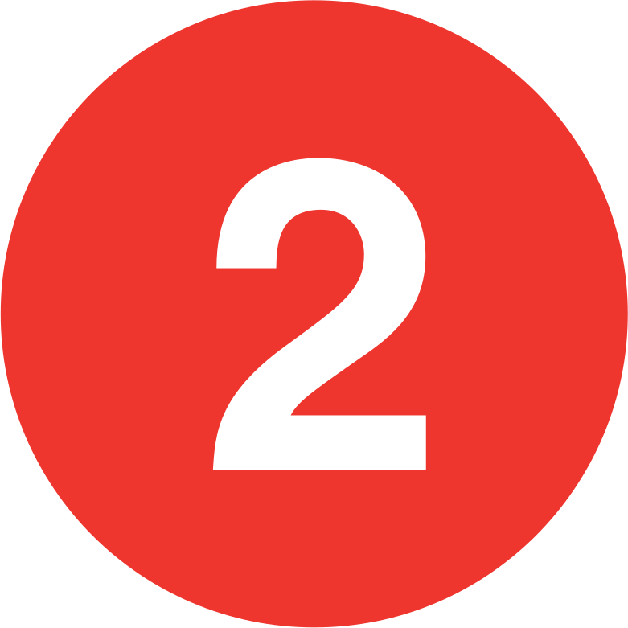
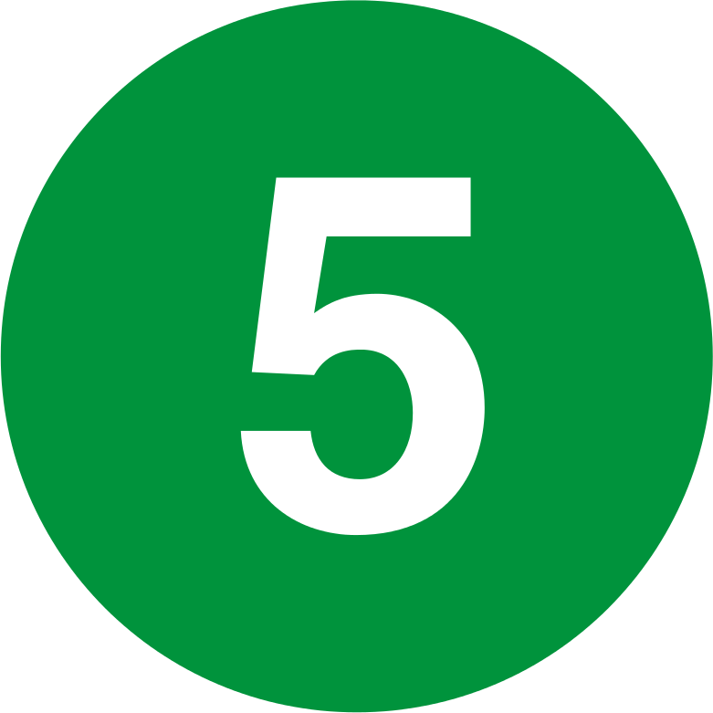
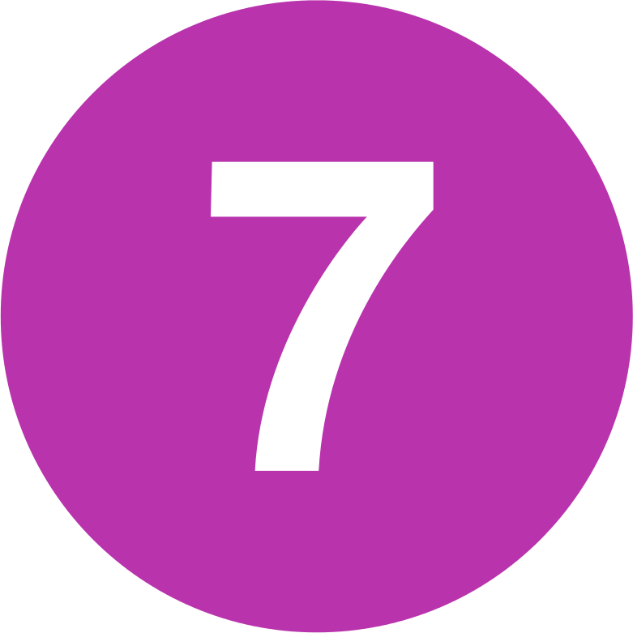

The Subway Above Ground
Income inequality is a defining characteristic of New York City, but it is easy to be unaware of it. Many New Yorkers use the subway to get around, rendering the above ground conditions of the places we travel through largely invisible. In this piece, I use music as a metaphor and measure of inequality, and the subway as a means of following the data through space and time.
Here you can stream or download one of 46 media files that loosely follow full rides along 23 of the MTA subway lines in both directions. Once you start to play the file, find your station, and listen to the song in the background as you ride the subway. The quantity and power of the instruments at any given moment in the song correspond to the median household income of the neighborhood that you are passing through. The result is a meditative piece in which the dramatic contrasts of a song echo the dramatic differences of income in the city.
You can also visit this piece's sister project that turns this same data into a 3D interactive map
-
 South Ferry
South Ferry - Van Cortlandt Park - 242 St
-  Flatbush Av - Brooklyn College
- Wakefield - 241 St
-
 New Lots Av
New Lots Av - Harlem - 148 St
-
 Crown Hts - Utica Av
Crown Hts - Utica Av - Woodlawn
-  Flatbush Av - Brooklyn College
- Eastchester - Dyre Av
-
 Brooklyn Bridge - City Hall
Brooklyn Bridge - City Hall - Pelham Bay Park
-  34 St - 11 Av
- Flushing - Main St
-
 Ozone Park - Lefferts Blvd
Ozone Park - Lefferts Blvd - Inwood - 207 St
-
 Brighton Beach
Brighton Beach - 145 St
- Euclid Av
- 168 St
-
 Coney Island - Stillwell Av
Coney Island - Stillwell Av - Norwood - 205 St
-
 World Trade Center
World Trade Center - Jamaica Center - Parsons/Archer
- Coney Island - Stillwell Av
- Jamaica - 179 St
- Church Av
- Court Sq
-
 Broad St
Broad St - Jamaica Center - Parsons/Archer
- Canarsie - Rockaway Pkwy
- 8 Av
- Middle Village - Metropolitan Av
- Forest Hills - 71 Av
-
 Coney Island - Stillwell Av
Coney Island - Stillwell Av - Astoria - Ditmars Blvd
- Coney Island - Stillwell Av
- 96 St
-
 Bay Ridge - 95 St
Bay Ridge - 95 St - Forest Hills - 71 Av
- Arthur Kill
- St George
-
 Whitehall St
Whitehall St - Astoria - Ditmars Blvd
-
 Broad St
Broad St - Jamaica Center - Parsons/Archer
Created by Brian Foo using Median household income by census tract, 2017 ACS 5-year estimates (B19013) and MTA subway station data. Code is open source.